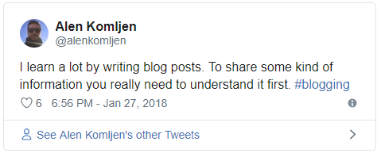
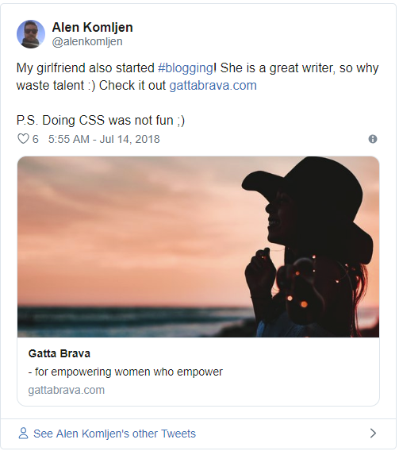

技术博客的重要性
本篇文章由我翻译自：https://akomljen.com/the-importance-of-tech-blogging/，翻译难免出现差错，尽请谅解。
我有很多干货将在博客上分享，这实际上已经是我的第三个技术博客，算是比较的成功的。很多优秀的工程师有很多优秀的想法，但经常找不到开始动笔分享的理由。通常你会听到“我没有时间去写”这样的话，或者他们只是看不到这件事的重要之处。他们不了解博客如何在专业性领域帮助他们。现在，对你来说更重要的是将自己分享给世界，作为技术人员，我们应该成为一个榜样。
为什么要开始写博客？
首先我来回答这个问题，为什么？
这有很多答案，但其中最重要的一个原因是——曝光。作为计算机软件工程师，我们工作范围非常广泛，同时也面对着来自世界不同地区的竞争。你应该用着眼更大的范围去思考和行动！
科技世界简历的作用越来越低效，让人们找到你，读到你正在做的事情，之后，这些人总会提供一些东西给你——这也是曝光为何显得如此重要的原因了。根据我作为DevOps工程师的个人经验，我很少发送简历。实际上我自己都不知道上次发简历的时间了。你几乎能在任何地方看到我的文章，HR或公司每周都会直接与我联系。机会主动靠近我，而不是我去寻找机会。
记住以上所有内容，你还将学到更多关于写作的知识。

从哪儿开始？
你可以写下你最近做过的有趣的事情，或者写一些你想要更好理解的事情。不要试图找到一个完美的写作由头。在学习Kubernetes的过程中，我一直努力寻找帮助我开始学习的好文章。我如今正在写很多关于Kubernetes的文章。再举一个例子，我的未婚妻等了好几年才开始写博客。她不相信她的内容对某人来说会很有趣，并且一直让她感到厌烦。我很自豪她开始了，现在她的写作比我更多。我建议你阅读她关于如何掌握生活改变的两篇博文：

不要花太多时间思考写什么以及你的博客应该是什么样子。基本上，你可以立即开始写一些谷歌文档。写作的同时也会得到一些新的想法。无论如何，你可能在一段时间里对第一篇文章并不是那么有感情，对于你投入了努力感觉显得并不重要。这是正常的。随着时间的推移，你将掌握你独有的技能。
我提到这是我的第三篇博客。我写的是关于FreeBSD的提示和技巧，因为它是我首选的操作系统。这并不是很顺利（谁猜得到呢），几年前研究OpenShift时我决定写一篇关于如何在该平台上免费运行Wordpress博客的博客文章，我很快创建了名为TechBar的新博客并开始写作。新博客也不顺利。问题是我并不专注，一段时间后我完全停止写作。在博客方面，专注是关键。
技术资料
也许你已经写了一些东西，但现在你需要选择你的博客名称，域名，托管地点和其他技术内容。你可能会因为做出很多决定而迷失方向。它可能非常简单或非常复杂，具体取决于您选择的路径。我建议使用一些随时可用的主机平台与Wordpress或Ghost。Medium也是一种选择，但我不是粉丝。
有很多可以使用的托管服务提供商。对于Wordpress，你可以使用Bluehost，只需3.95美元/月，对于Ghost，有官方的Ghost pro计划，其中最便宜的是每月79美元。在我看来，Ghost pro对于初学者来说太贵了。我使用了两个平台，我更喜欢Ghost。只是我个人的偏好。我在DigitalOcean上部署了Ghost，使用最小的VM进行备份只花了6美元/月。由于Cloudflare，它大部分时间都处于闲置状态，每天有1k用户。
我是DevOps的人，我无法帮助自己不创建Terraform文件来启动VM，创建防火墙规则，启用备份，设置Cloudflare，复制所有文件并在Docker中启动Ghost博客。当然，使用像Docker和Let’s Encrypt这样的好东西 - 因为HTTPS是必须的。我的Terraform文件仍未准备好共享，但这里是docker compose文件，你可以使用它来启动Ghost博客并通过Let’s Encrypt获得免费的SSL证书：
1 | ⚡ cat > docker-compose.yml <<EOF |
在使用此文件之前，你需要准备好域名并执行一些准备步骤：
1 | ⚡ mkdir files |
这就是我在这个博客中使用的内容，也是我未婚妻的博客Gatta Brava在Terraform的帮助下也做了同样的事情。
对于这两个博客，我付出了比想象中更多的努力。我买了一个自定义主题并做了一些定制。我不知道我在CSS方面做了什么，但我尝试过，我对最终结果感到满意。你可以使用默认的Ghost Casper主题来进行写作。你可以随时更改它，所以不用担心。
我博客的所有访问量中有90％来自自然搜索。在搜索引擎优化和营销方面，我学到了很多东西。所有这些事情都无法在一夜之间学会，所以请写下并学习如何宣传您的内容。有时你会得到很好的反馈，这会增强你的信心。**博客是你的个人项目。**你做出的所有决策，将它将绽放光芒。
我建议观看Troy Hunt关于如何破解你的职业生涯的演讲（ hack your career）。
本文标题：技术博客的重要性
文章作者：小师
发布时间：2018-12-24
最后更新：2022-05-04
原始链接：chunlife.top/2018/12/24/技术博客的重要性/
版权声明：本站所有文章均采用知识共享署名4.0国际许可协议进行许可